近五年消化科 100 大考點（111-1 ～ 115-2）
產生方式：以考選部 111-1～115-2 共 5,200 題為語料，篩出 446 題消化科核心題， 依考點群出現次數排序後人工彙整。每一條都在近五年題本中實際出現過。
題型分布（446 題）：診斷與鑑別 27%、機轉與病生理 25%、治療與處置 14%、 解剖組織胚胎 9%、檢驗判讀 4%。 → 機轉題與診斷題合計超過一半，只背結論的讀法會直接失分。
科目分布：醫學五（外科）166 題 > 醫學三（內科）100 題 > 醫學二 74 題 > 醫學一 69 題 > 醫學四 31 題 > 醫學六 6 題。 → 二階消化科的主戰場是外科題本。
A. 消化道生理・解剖・組織・胚胎（一階主戰場，43 題）
| # | 考點 | 命題角度 | 常見陷阱 |
|---|---|---|---|
| 1 | 壁細胞：分泌鹽酸與內在因子、嗜酸性、胃底腺上中段 | 「哪個細胞分布在胃底腺而非幽門腺」 | 幽門腺沒有壁細胞 |
| 2 | 主細胞：分泌胃蛋白酶原、嗜鹼性、腺體底部 | H&E 染色特徵直接入題 | 把主細胞當成嗜酸性 |
| 3 | 胃酸三條刺激路徑：組織胺 H₂（cAMP）、gastrin CCK-B、ACh M₃ | 「何者刺激胃酸效果最低」 | 忽略組織胺是放大器，gastrin/ACh 多經它作用 |
| 4 | 胃酸分泌三期：頭期 30%、胃期 60%、腸期 10% | 比例與介質 | 誤以為頭期最大 |
| 5 | Gastrin：胃竇 G 細胞，低 pH 經 somatostatin 負回饋 | 萎縮性胃炎 gastrin 代償升高 | 把「gastrin 高」直接等同 ZES |
| 6 | Secretin：十二指腸 S 細胞、酸刺激、促胰管碳酸氫鹽 | 「最主要的直接作用」 | 誤答「促進消化酵素分泌」（那是 CCK） |
| 7 | CCK：促膽囊收縮、Oddi 括約肌鬆弛、胰酵素分泌 | 脂肪餐後的生理反應 | 與 secretin 作用對調 |
| 8 | Brunner 腺位於十二指腸黏膜下層，分泌鹼性黏液 | 「黏膜層與黏膜下層皆有腺體者」 | 誤答食道（食道腺體也在黏膜下但無吸收上皮特徵） |
| 9 | 大腸特徵：結腸帶、結腸袋、腸脂垂，無絨毛 | 「何者不是大腸特徵」 | 把絨毛當大腸特徵 |
| 10 | 三條結腸帶匯聚點＝闌尾根部 | 手術中定位闌尾 | 誤答迴盲瓣 |
| 11 | 闌尾位置變異：後盲腸位最常見 | 「闌尾最不可能在何處」 | 忽略位置變異造成非典型表現 |
| 12 | 內臟傳入節段：前腸 T5–9、中腸 T10、後腸 T11–L1 | 腹痛定位推理 | 把轉移痛當成器官移動 |
| 13 | SMA 分支與供應範圍（至橫結腸右 2/3） | 缺血範圍判斷 | 忘記脾曲屬分水嶺 |
| 14 | 分水嶺區：脾曲（Griffith）、直腸乙狀交界（Sudeck） | 缺血性大腸炎好發處 | 誤答升結腸 |
| 15 | 腹膜後器官（SAD PUCKER） | 「何者是腹膜後器官」 | 忘記十二指腸第 2、3 部與胰臟 |
| 16 | 肝臟雙重血流：門靜脈 75% 血流、動脈供氧各半 | HCC 動脈供血的基礎 | 誤以為肝臟主要靠動脈供血 |
| 17 | 肝小葉分區：Zone 1 富氧、Zone 3 最缺氧且 CYP450 最多 | 中央小葉壞死 | 把 Zone 1 當最易受損 |
| 18 | 肝星狀細胞（Ito）：儲存維生素 A，活化後纖維化 | 肝硬化病理機轉 | 誤答庫佛氏細胞 |
| 19 | 主胰管與膽總管共同開口於 Vater 壺腹 | 解剖與膽石性胰臟炎 | 誤答十二指腸第一部 |
| 20 | 膽汁的腸肝循環（末端迴腸重吸收） | 迴腸切除後脂肪吸收不良 | 誤以為空腸吸收膽鹽 |
| 21 | 脂溶性維生素 A/D/E/K 需膽汁協助吸收 | 膽汁鬱積的缺乏表現 | 把 B12 也算進去 |
| 22 | B12 吸收：內在因子 ＋ 末端迴腸 | 胃切除、迴腸切除後貧血 | 誤答十二指腸 |
| 23 | 中腸旋轉 270°、生理性臍疝復位 | 腸旋轉不良與臍膨出 | 旋轉方向記反 |
| 24 | 前腸／中腸／後腸的血管與衍生構造 | 胚胎題常態 | 十二指腸由前中腸交界發育（雙重供血） |
| 25 | 分節運動 vs 蠕動的生理功能 | 「分節運動的功能」 | 誤以為分節運動主要推進食糜（其實是混合） |
| 26 | 腸道神經系統：Auerbach（肌間）管蠕動、Meissner（黏膜下）管分泌 | Hirschsprung 缺乏兩者神經節 | 兩層對調 |
| 27 | 唾液澱粉酶與胰澱粉酶、刷狀緣雙醣酶（麥芽糖酶等） | 醣類消化路徑 | 誤把麥芽糖水解歸給澱粉酶 |
| 28 | 胰脂酶需 colipase 與膽鹽；胃脂酶不需 | 「何種脂酶需膽汁協助」 | 忽略 colipase 角色 |
| 29 | 胰臟腺泡細胞兼具外分泌與類內分泌功能 | 組織學題 | 誤答肝細胞 |
| 30 | 胰臟酵素以酵素原分泌，由腸激酶活化 trypsinogen | 胰臟炎自我消化機轉 | 誤以為胰臟內就已活化 |
（本節共 43 題，上表列出重複出現者。）
B. 肝膽（105 題，最大器官群）
| # | 考點 | 命題角度 | 常見陷阱 |
|---|---|---|---|
| 31 | HBV 為部分雙股 DNA、具反轉錄酶、cccDNA 難清除 | 為何需長期治療 | 以為核苷類似物可根治 |
| 32 | HBV 可不經肝硬化直接致癌（嵌入＋HBx 抑 p53） | 「何種病毒直接致細胞增生」 | 把 HCV 也當直接致癌 |
| 33 | HCC 分子事件：TERT 啟動子突變最早最常見，其次 CTNNB1、TP53 | 分子基因變異題 | 誤答 KRAS |
| 34 | anti-HBc 是分辨「疫苗 vs 感染」的唯一標記 | 血清學判讀 | 用 anti-HBs 效價判斷 |
| 35 | 窗口期只有 anti-HBc IgM 陽性 | 血清學組合題 | 誤判為未感染 |
| 36 | 台灣 1984 年新生兒 B 肝疫苗計畫 → 兒童肝癌下降 | 本土公衛考點 | 記錯年代或誤以為成人計畫 |
| 37 | 慢性 B 肝治療適應症：肝硬化者不論 ALT 一律治療 | 「何者不是治療依據」 | 以為 ALT 正常就不用治療 |
| 38 | 孕婦慢性 B 肝首選 TDF；第三孕期給藥降低垂直傳染 | 用藥安全 | 誤選 entecavir |
| 39 | HCC 影像診斷特殊性：動脈期強化＋門脈期洗脫可免切片 | 診斷流程 | 堅持一定要病理 |
| 40 | AFP 敏感度僅約 60% | 監測限制 | 用 AFP 正常排除 HCC |
| 41 | HCC 監測：高風險者每 6 個月超音波 ± AFP | 篩檢間隔 | 誤答每 12 個月 |
| 42 | 米蘭準則：單顆≤5 cm 或≤3 顆各≤3 cm、無血管侵犯與肝外轉移 | 移植適應症 | 用於決定燒灼或切除 |
| 43 | BCLC 同時整合腫瘤、肝功能、體能狀態並對應治療 | 分期系統比較 | 只看腫瘤大小 |
| 44 | 浸潤型 HCC 常合併門靜脈腫瘤栓塞 | 影像判讀 | 與單純血栓混淆 |
| 45 | TACE 肝外側支供血最常見為右下橫膈動脈 | 介入治療細節 | 誤答胃左動脈 |
| 46 | 肝切除術前評估：肝功能、ICG、剩餘肝體積、門脈壓 | 「何者非必要」 | 加入無關檢查當必要 |
| 47 | 活體肝移植的親屬與法定條件 | 醫學倫理法規 | 忽略配偶的附加條件 |
| 48 | Child-Pugh 五項：膽紅素、白蛋白、INR、腹水、腦病 | 「不包含何者」 | 誤以為含 creatinine 或轉胺酶 |
| 49 | MELD 三項：膽紅素、INR、creatinine | 同上 | 誤以為含腹水 |
| 50 | 門脈高壓雙重機轉：肝內 NO 不足 vs 內臟 NO 過多 | 機轉題 | 兩者方向記反 |
| 51 | 竇前性門脈高壓（血吸蟲、門靜脈栓塞）肝功能常正常 | 分類題 | 以為門脈高壓必有肝功能異常 |
| 52 | HVPG ≥10 為 CSPH、≥12 出血風險 | 數值題 | 記成 ≥5 |
| 53 | SAAG ≥1.1 → 門脈高壓性腹水 | 腹水鑑別 | 沿用舊的滲出／漏出液分類 |
| 54 | 腹水總蛋白 ≥2.5 且 SAAG ≥1.1 → 心因性 | 雙軸判讀 | 只看 SAAG |
| 55 | SBP：PMN ≥250、單一革蘭氏陰性菌、第三代 cephalosporin | 診斷與治療 | 與續發性腹膜炎混淆 |
| 56 | SBP 加白蛋白時機：Cr>1、BUN>30、膽紅素>4 | 降低 HRS 與死亡率 | 一律給或一律不給 |
| 57 | 急性靜脈曲張出血四件事：血管收縮劑、抗生素、結紮、限制性輸血 | 處置題 | 輸血目標訂太高 |
| 58 | 胃靜脈曲張 GOV2／IGV1 用 cyanoacrylate | 治療差異 | 一律用結紮 |
| 59 | 肝性腦病不限制蛋白質 | 新舊觀念 | 沿用舊教科書限蛋白 |
| 60 | 血氨不能用於診斷或追蹤肝性腦病 | 檢驗限制 | 以氨值調整治療 |
| 61 | 肝硬化腹水低血鈉是稀釋性 → 限水而非補鈉 | 電解質處置 | 給高張食鹽水 |
| 62 | 腹水首選 spironolactone（對抗續發性高醛固酮） | 藥物選擇 | 先用 furosemide |
| 63 | 大量抽腹水每 1 L 補白蛋白 6–8 g | 劑量題 | 記成每 1 L 補 1 g |
| 64 | TIPS 改善腹水但惡化肝性腦病 | 併發症 | 以為 TIPS 無中樞影響 |
| 65 | 肝腎症候群：terlipressin ＋ 白蛋白，根治靠移植 | 治療 | 誤以為利尿劑有效 |
| 66 | 肝移植禁忌：無法控制的肝外惡性腫瘤、敗血症等 | 「何者不適合移植」 | 把可控共病當禁忌 |
| 67 | 黃疸三分類與尿膽紅素／尿膽素原變化 | 判讀題 | 阻塞性時尿膽素原記成增加 |
| 68 | Gilbert（禁食後黃疸、未結合）、Crigler-Najjar II 對 phenobarbital 有反應 | 遺傳性黃疸 | I 型與 II 型對調 |
| 69 | Dubin-Johnson 肝呈黑色；Rotor 不黑 | 鑑別 | 兩者對調 |
| 70 | 自體免疫肝炎：ANA/ASMA、IgG 升高、界面性肝炎、類固醇有效 | 診斷與治療 | 與 PBC 的 AMA 混淆 |
| 71 | PBC：AMA 陽性、UDCA 第一線；PSC：ANCA、串珠狀膽管、與 UC 相關 | 兩者對照 | 治療與抗體對調 |
| 72 | 膽固醇結石機轉：膽固醇過飽和、膽鹽／卵磷脂不足、膽囊排空不良 | 「何者錯誤」 | 誤以為膽紅素結石機轉相同 |
| 73 | 急性膽囊炎：Murphy sign、TG18 診斷三要件、早期腹腔鏡切除 | 診斷與時機 | 一律延遲手術 |
| 74 | 急性膽管炎：Charcot triad 敏感度低；Grade III 緊急引流 | 處置優先序 | 先觀察抗生素反應 |
| 75 | Mirizzi 症候群：膽囊頸／膽囊管結石壓迫總肝管 | 阻塞性黃疸病因 | 誤答總膽管結石 |
| 76 | 膽道閉鎖：陶土色便＋直接型高膽紅素，60 天內 Kasai | 小兒膽汁鬱積 | 當成生理性黃疸觀察 |
| 77 | 膽管癌：延遲期漸進性強化、CA19-9；壺腹癌預後最好 | 鑑別與預後 | 以為三者預後相同 |
| 78 | Caroli 病：肝內膽管囊狀擴張、central dot sign、易膽管炎與膽管癌 | 少見但近年入題 | 與膽總管囊腫混淆 |
| 79 | 妊娠肝內膽汁鬱積：膽酸濃度與胎兒風險最相關 | 產科交界題 | 用膽紅素或 ALT 判斷風險 |
| 80 | 細菌性肝膿瘍：多為腸道來源多菌種，Klebsiella 在台灣重要 | 本土流行病學 | 一律當阿米巴 |
| 81 | 肝腺瘤與口服避孕藥相關、易出血與惡性轉化；HNF1α 型幾乎不惡性 | 良性腫瘤鑑別 | 把 FNH 當易出血 |
| 82 | FNH 有中央疤痕、血管瘤週邊結節狀填充 | 影像鑑別 | 三者影像特徵互換 |
| 83 | MASLD／MASH 新命名與代謝共病 | 近年新命名 | 仍用 NAFLD 定義作答 |
| 84 | 酒精性肝病 AST/ALT >2；重症用 Maddrey DF ≥32 評估類固醇 | 判讀與治療 | 比值方向記反 |
C. 胰臟（59 題）
| # | 考點 | 命題角度 | 常見陷阱 |
|---|---|---|---|
| 85 | 急性胰臟炎病因：膽石與酒精為兩大宗；ALT >3 倍指向膽石性 | 病因推理 | 忽略高三酸甘油酯與高血鈣 |
| 86 | 膽石性胰臟炎的關鍵治療是解除膽道阻塞（合併膽管炎時緊急 ERCP）並在同次住院切膽囊 | 「最重要的治療」 | 只做支持療法 |
| 87 | Ranson 需 48 小時才完成；BISAP 24 小時內可算 | 時機題 | 入院當下用 Ranson |
| 88 | Atlanta 2012：器官衰竭 >48 小時為重度 | 定義題 | 把預測分數當嚴重度定義 |
| 89 | amylase／lipase 高低與嚴重度無關 | 檢驗限制 | 用酵素值判斷預後 |
| 90 | 早期積極輸液、早期腸道營養優於禁食 | 治療新觀念 | 沿用「完全禁食」舊觀念 |
| 91 | 晚期併發症：假性囊腫、包裹性壞死、感染性壞死、脾靜脈栓塞 | 「何者最少見」 | 把早期併發症當晚期 |
| 92 | 低血鈣：脂肪皂化 → 預後不良指標 | 機轉題 | 誤以為與副甲狀腺有關 |
| 93 | 慢性胰臟炎：鈣化、脂肪便、糖尿病三聯；併發症含假性囊腫、膽道狹窄、脾靜脈栓塞 | 「何者非常見併發症」 | 把肝硬化列為併發症 |
| 94 | 胰臟癌：無痛性進行性黃疸、Courvoisier sign、CA19-9、預後最差 | 臨床表現 | 誤以為早期就有疼痛 |
| 95 | 胰臟癌可切除性判斷：血管侵犯程度（borderline resectable 概念） | 手術適應症 | 只看腫瘤大小 |
| 96 | 胰臟神經內分泌腫瘤：insulinoma（Whipple 三徵）、gastrinoma（ZES）、VIPoma（WDHA） | 症候群配對 | 三者症狀互換 |
| 97 | ZES：多發或不典型潰瘍、腹瀉、secretin 刺激試驗反常上升 | 診斷 | 用 secretin 抑制反應判斷 |
| 98 | IPMN：主胰管型惡性風險高需手術；分支型依 worrisome features 決定 | 囊性病變處置 | 一律手術或一律追蹤 |
| 99 | 漿液性囊腺瘤多為良性（中央疤痕、蜂窩狀），黏液性有惡性潛能 | 囊性病變鑑別 | 兩者惡性風險對調 |
| 100 | 自體免疫胰臟炎（IgG4）：臘腸狀胰臟、對類固醇反應好 | 少見但可入題 | 誤診為胰臟癌直接手術 |
D. 食道・胃（92 題）— 併入上表未列者
- GERD：LA 分級 C/D 才算客觀證據；長期併發症為 Barrett（Prague C&M 描述範圍，不含分化不良）。
- Barrett 食道：腸化生＋杯狀細胞；分化不良程度決定內視鏡治療。
- 食道癌：台灣以鱗狀細胞癌為主（菸酒檳榔），腺癌好發下段與 GEJ。
- Achalasia：LES 鬆弛不全＋蠕動消失、鳥嘴狀；Chicago v4.0 分三型，II 型治療反應最好。
- 食道憩室：Zenker（咽食道，假性憩室）、中段牽引性、膈上型。
- 食道穿孔：Boerhaave；治療原則為引流、控制感染、修補或支架，延遲診斷死亡率高。
- 食道裂孔疝氣：I 型滑動最常見；II 型 paraesophageal 有嵌頓風險，有症狀者需手術。
- 胃癌：腸型（萎縮→腸化生→分化不良）vs 瀰漫型（CDH1、印戒細胞、皮革胃）；D2 淋巴結廓清。
- 胃 MALT 淋巴瘤：早期可單靠除菌治癒（t(11;18) 陰性反應較好）。
- GIST：KIT（CD117）陽性，治療用 imatinib；風險依大小與有絲分裂數。
- 胃切除後：早期／晚期傾食、輸入袢症候群、鹼性逆流性胃炎、B12 與鐵缺乏、殘胃癌。
E. 小腸・大腸（161 題）
- 大腸直腸癌：篩檢（糞便潛血）、腺瘤—癌序列、APC→KRAS→TP53、右側與左側表現差異。
- 息肉追蹤間隔：絨毛狀、≥10 mm、高度分化不良任一即縮短追蹤。
- 遺傳症候群：Lynch（MMR、右側、子宮內膜癌）、FAP（APC、上千顆）、Peutz-Jeghers（STK11、錯構瘤、黏膜色素斑）。
- IBD：克隆氏 vs UC 的六大區分；UC 手術適應症（毒性巨結腸、大出血、癌變、藥物無效）。
- 感染性腹瀉：EHEC O157:H7 禁抗生素與止瀉劑（HUS 風險）；C. difficile 用口服 vancomycin 或 fidaxomicin。
- 寄生蟲：阿米巴肝膿瘍（果醬樣）、Giardia（脂肪瀉）、Clonorchis（膽管癌）、Ascaris（膽道阻塞）。
- 吸收不良定位：腔內消化 vs 黏膜吸收 vs 淋巴運送；乳糜瀉抗 tTG IgA 與十二指腸切片。
- 小腸出血：血管發育不良（angiodysplasia）為成人常見原因；兒童想 Meckel。
- 缺血性大腸炎：脾曲好發、多為自限性，與急性腸繫膜缺血不同。
- 痔瘡與肛裂：內痔分度決定治療；肛裂好發後正中線。
F. 急腹症與外科（55 題）
- 闌尾炎轉移痛機轉、三條結腸帶定位、腹腔鏡利弊、延遲就醫的併發症。
- 小腸阻塞（沾黏＞疝氣＞腫瘤）與絞窄五警訊；水溶性顯影劑的診療角色。
- 乙狀結腸扭轉先內視鏡減壓；盲腸扭轉直接手術。
- 腸繫膜缺血：pain out of proportion → CTA。
- 憩室炎 Hinchey 分級；急性期不做大腸鏡。
- 術後腸阻塞用 alvimopan；Ogilvie 用 neostigmine。
- 腹內感染源控制後抗生素約 4 天。
- 腸壁積氣需合併臨床判讀，不等於一定壞死。
G. 小兒消化（30 題，幾乎全在醫學四與醫學五）
| 疾病 | 關鍵辨識 | 陷阱 |
|---|---|---|
| 肥厚性幽門狹窄 | 3–6 週、非膽汁性噴射狀嘔吐、低血氯低血鉀代謝性鹼中毒 | 先手術而未矯正電解質 |
| 腸旋轉不良併中腸扭轉 | 新生兒膽汁性嘔吐、漩渦徵 | 當成餵食不耐觀察 |
| 腸套疊 | 6 月–2 歲、草莓果醬便、靶心徵 | 直接手術而未先嘗試復位 |
| 先天性巨結腸 | 胎便延遲 >48 小時、直腸指診後噴便、無神經節細胞 | 只靠鋇劑而未切片 |
| 壞死性腸炎 | 早產兒、腸壁積氣 | 忽略禁食與抗生素時機 |
| 膽道閉鎖 | 陶土色便、直接型高膽紅素、60 天內 Kasai | 誤為母乳性黃疸 |
| 小腸閉鎖 | 產前羊水過多、double bubble（十二指腸閉鎖） | 與環狀胰臟混淆 |
| Meckel 憩室 | 兩歲、2 吋、2 呎、2% | 忘記 ⁹⁹ᵐTc 掃描 |
使用建議
- 第一輪：只讀「陷阱」欄，這是最短路徑的失分預防。
- 第二輪：對照各章節的「病理生理｜為什麼」補上機轉。
- 第三輪：用
site/quiz.html做自我測驗，錯題回到對應章節。 - 一階讀者優先 A 段與各章的「一階基礎」；二階讀者優先 D–G 段與各章的「治療策略」。
圖譜
以下圖片來自 Wikimedia Commons，授權為 CC0／PD／CC BY／CC BY-SA，已逐張人工確認內容與說明相符。
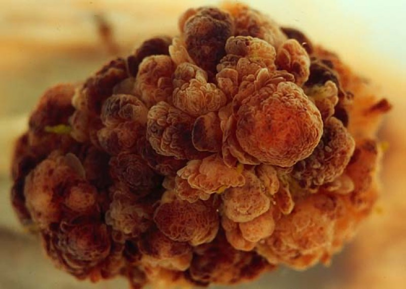
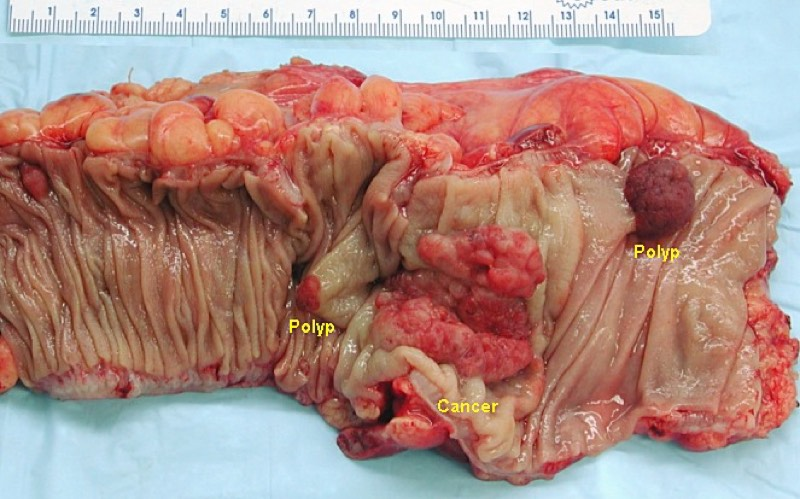
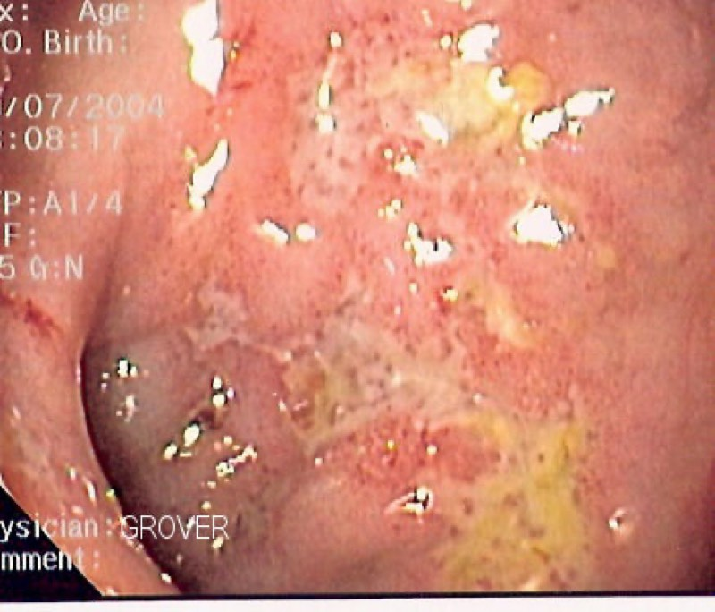
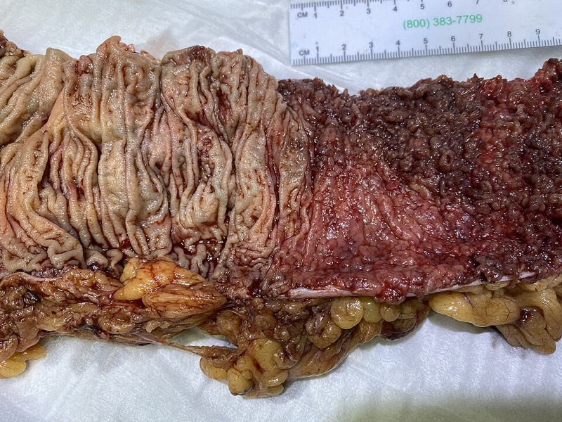
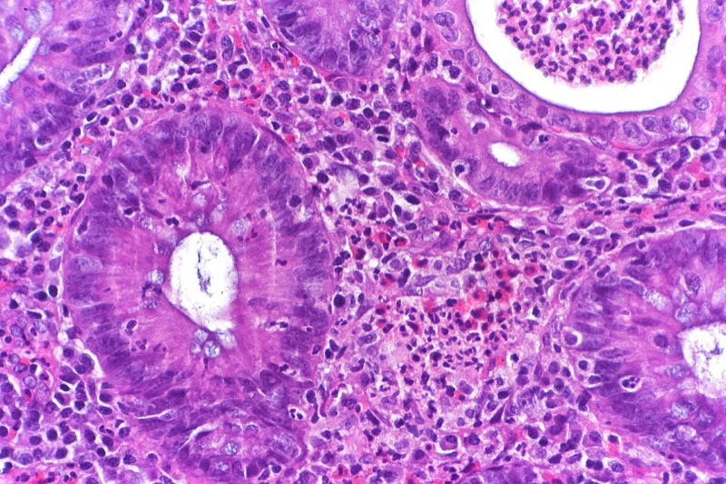
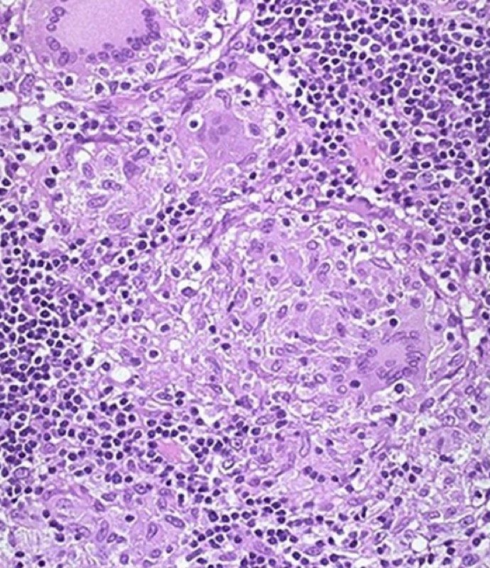
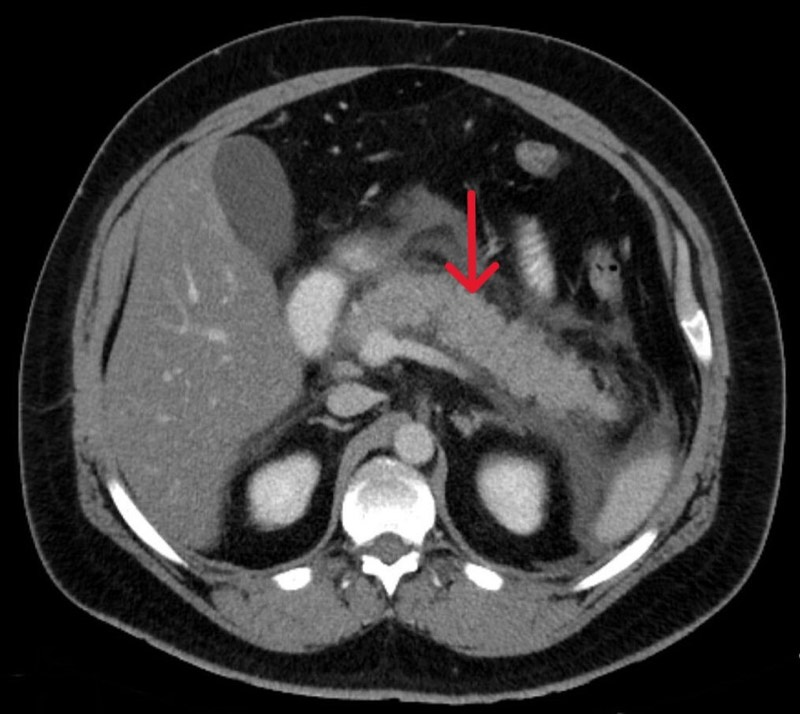
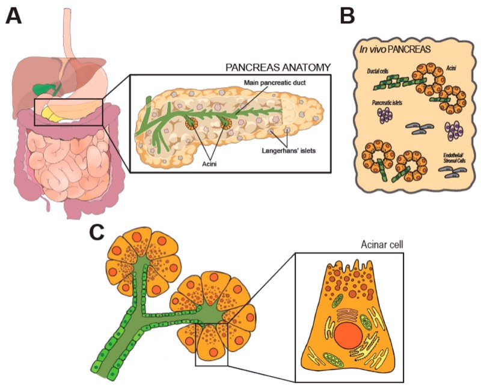
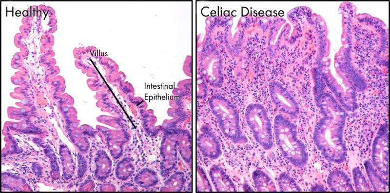
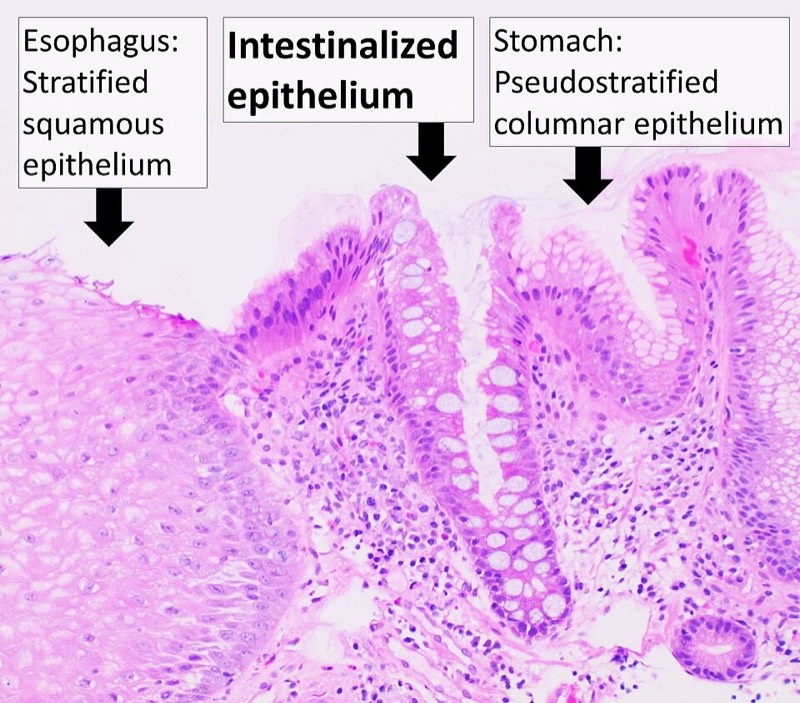
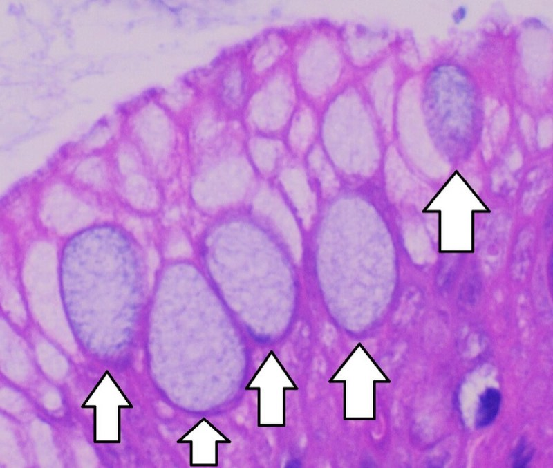
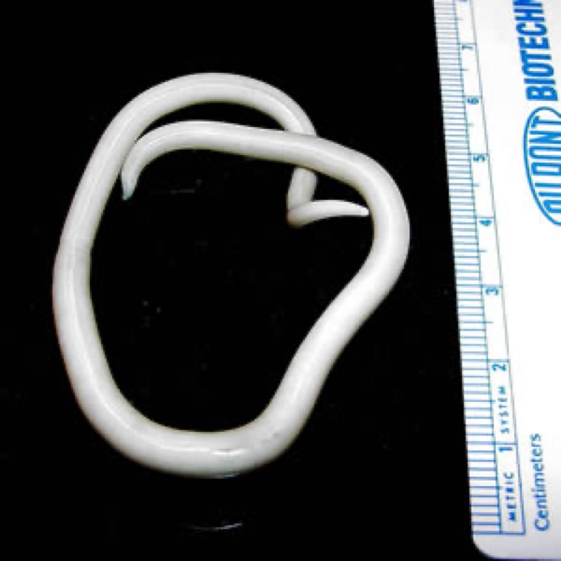